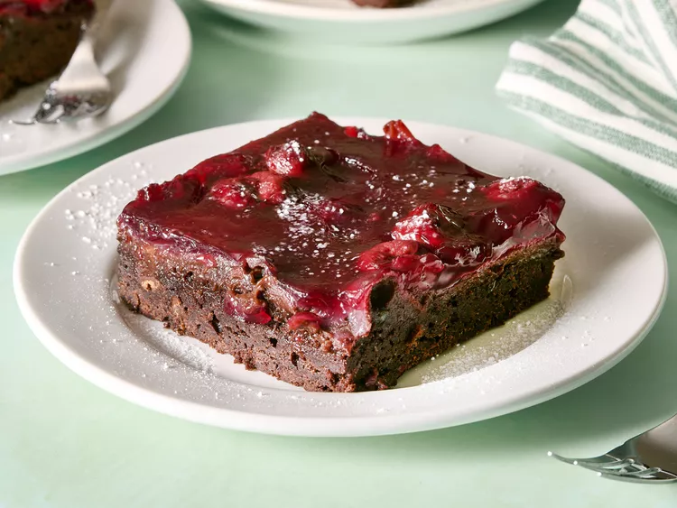

Fudgy Black Forest Bars
Home

Description
These fudgy Black Forest bars are a decadent dessert that is somewhere between brownie and cake, loaded with chocolate and bathed in cherries. They're fabulous with coffee.
Ingredients
- 1 cup salted butter, softened
- 1.5 cups white sugar
- 2 teaspoons vanilla extract
- 4 large eggs
- 2 cups all-purpose flour
- 1/2 cup unsweetened triple chocolate baking cocoa
- 1 large dark chocolate bar, chopped into chunks (about 1 cup chunks)
- 1 (21 ounce) can cherry pie filling
- 1 tablespoon confectioners sugar(optional)
Steps
- Preheat the oven to 180 degrees C. Grease a 9x13-inch pan.
- Beat butter and sugar together in a bowl with an electric mixer until creamy. Beat in vanilla. Add eggs, 1 at a time, beating in each egg completely before adding the next.
- Stir in flour and cocoa powder until fully combined. Stir in chocolate chunks.
- Spread mixture into prepared pan, then pour pie filling over the top, smoothing it out.
- Bake in the preheated oven for 40 minutes, then check for doneness. A toothpick inserted near the center should come out with just a few moist crumbs. Bake up to 10 minutes more, if needed.
- Cool completely; sprinkle with confectioner’s sugar. Cut into bars.